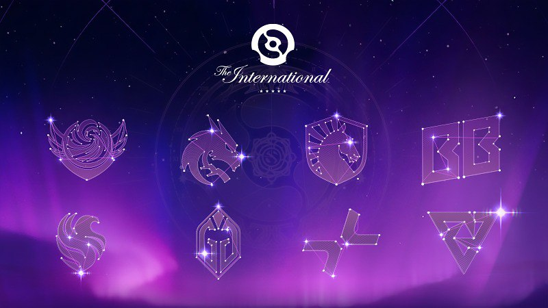
The International 2025 — прямі запрошення і «Дорога на TI»
15 травня 2025 р.
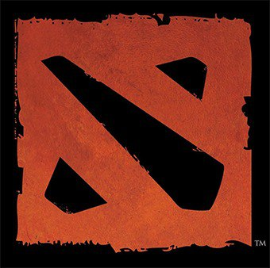
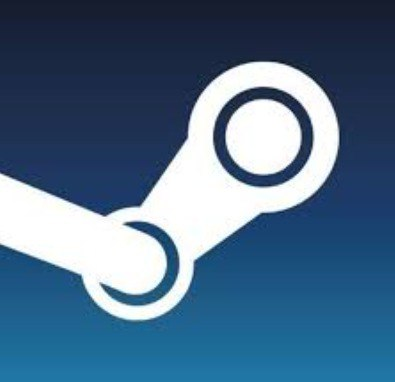
ГРАТИ БЕЗКОШТОВНО— Destructoid

15 травня 2025 р.
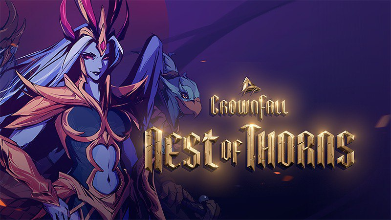
13 травня 2025 р.
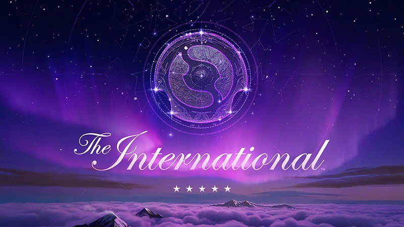
1 квітня 2025 р.
Dota 2 — це безкоштовна стратегічна онлайн-гра жанру MOBA (Multiplayer Online Battle Arena), де дві команди по 5 гравців змагаються за контроль над картою, знищуючи ворожу базу. Кожен гравець обирає героя з унікальними здібностями, щоб підтримати команду у бою.
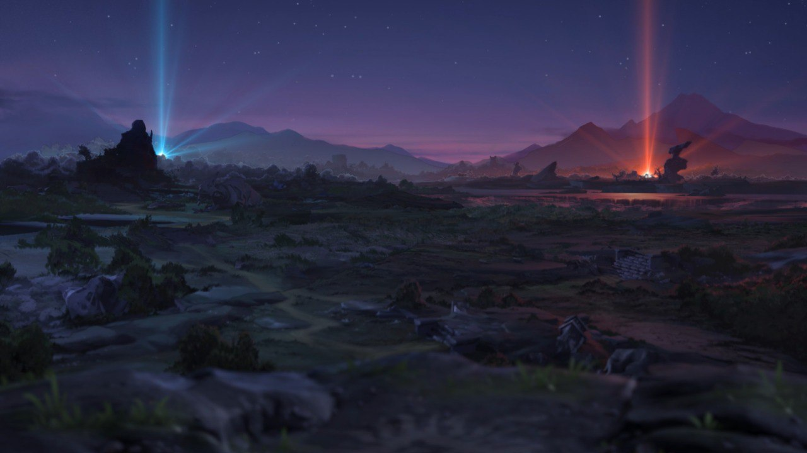
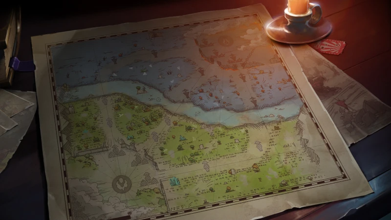

У Dota 2 понад 120 унікальних героїв, кожен з яких має власний стиль гри, набір здібностей та призначення на полі бою. Герої поділяються на ролі: керрі, сапорт, танк, ініціатор, нюкер тощо. Деякі з них завдають шкоди на відстані, інші спеціалізуються на ближньому бою. Герої вдосконалюються протягом гри, здобуваючи досвід і золото, яке витрачають на купівлю предметів. Вибір героя та правильна стратегія командної взаємодії є критично важливими для перемоги.
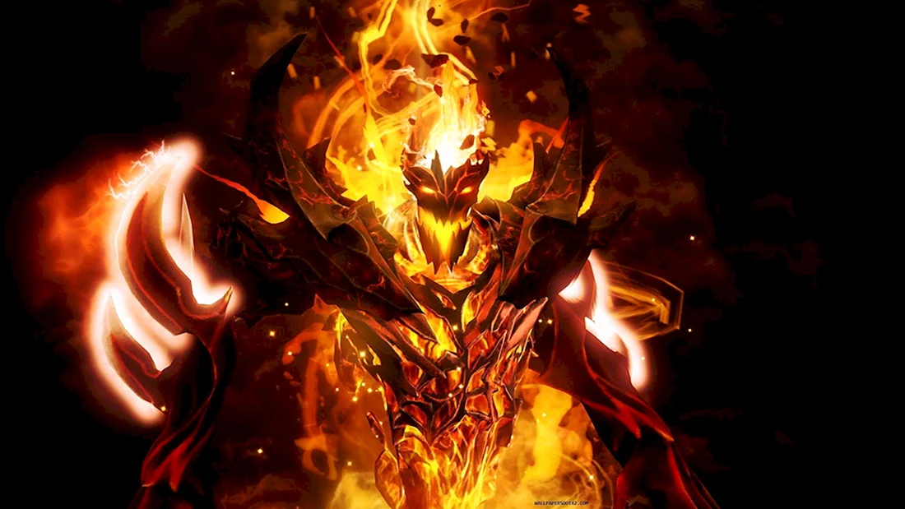
🕯️ Лор Shadow Fiend (Невермор) з Dota 2 Shadow Fiend, також знаний як Невермор, — один з найзловісніших і загадкових героїв у всесвіті Dota 2. Це демон, чия сутність пов’язана з поглинанням душ. 📖 Походження та суть Кажуть, у Невермора душа поета, але насправді у нього їх тисячі. Впродовж століть він поглинав душі поетів, священників, імператорів, жебраків, філософів, злочинців і, звісно ж, героїв. Від нього не сховатися нікому. Ніхто не знає, що він робить з душами. Ніхто не зазирав у Безодню, де серед астральних скель Невермор чатує, немов гадюка.
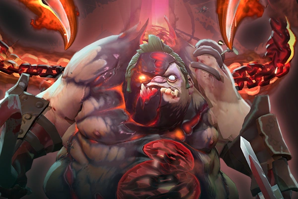
🪓 Лор Pudge — М'ясника з Dota 2 Pudge, також знаний як М'ясник, — один із найвідоміших і найжахливіших героїв у світі Dota 2. Його історія — це моторошна сага про смерть, гнилість і ненаситну жагу до плоті. Dota 2 Wiki +2 Dota 2 +2 Dota 2 Wiki +2 ⚰️ Походження: Вічна Бійня У Південних полях Вічної Бійні, на південь від Квойджа, Pudge невтомно працює ночами — розчленовує, потрошить і складає в купи кінцівки та нутрощі загиблих, щоб до ранку поле бою було очищене. У цьому проклятому місці нічого не розкладається — жоден труп не повертається в землю, незалежно від глибини могили. Оточений зграями падальників, які потребують, щоб він розрізав їхню їжу на шматки, Pudge відточує свої навички з лезами, які стають гострішими з кожним використанням. Cybersport.ru +2 Dota 2 Wiki +2 Dota 2 +2 🍖 Смак до плоті Спочатку Pudge мав схильність до м'ясництва, але з часом розвинув смак до його побічного продукту. Починаючи з шматочка м'яза тут, ковтка крові там... незабаром він заглиблював свої щелепи в найміцніші торси, як собака, що гризе ганчірку. Навіть ті, хто не боїться Жнеця, бояться М'ясника. 🔗 Ланцюги Відторгнення Pudge натрапив на Ланцюги Відторгнення після того, як був вигнаний з невідомої причини. Він опинився в місці, наповненому мертвими, і відчув запах чогось цікавого всередині великої тріщини в землі. Увійшовши в тріщину, Pudge зустрів Ланцюги Відторгнення, які самі рухалися, літаючи в повітрі та атакуючи його. Зрештою, він зміг підкорити Ланцюги та взяти їх під свій контроль. Мертвий Бог вважає це актом крадіжки та вимагає повернення Ланцюгів, надсилаючи Pudge м'ясо. Однак Pudge насолоджується товариством Ланцюгів і не має наміру їх повертати.
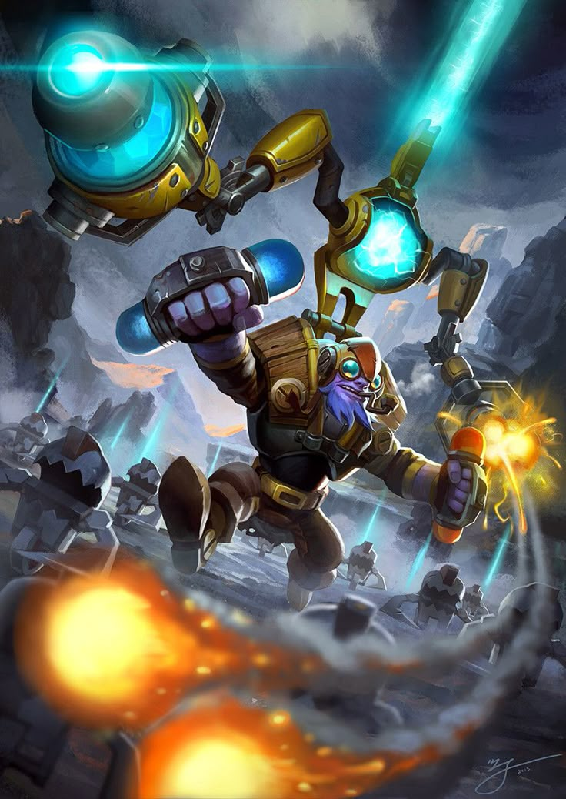
⚙️ Лор Tinker (Боуш) з Dota 2 Боуш, знаний як Tinker, належить до раси Keen — маленьких, але надзвичайно розумних істот, які покладаються виключно на науку та технології, відкидаючи магію як небезпечну та непередбачувану силу. 🧪 Фіолетове плато та експеримент Боуш був провідним дослідником природних законів і заснував підземну лабораторію під загадковим Фіолетовим плато. Там він разом із колегами Keen проводив експерименти, спрямовані на розкриття таємниць всесвіту. Однак один із експериментів вийшов з-під контролю: було відкрито портал до іншого виміру, з якого вирвалися жахливі створіння. Чорний туман огорнув плато, перетворивши його на місце вічної темряви та жаху. Боуш став єдиним, хто вижив у цьому інциденті, використовуючи лише свій розум і винаходи. Liquipedia +5 Dota 2 Wiki +5 dotacoach.gg +5 🚀 Винаходи та бойові можливості Після трагедії Боуш присвятив себе створенню бойових механізмів, щоб ніколи більше не бути беззахисним. Серед його винаходів: Лазер: потужний промінь, що засліплює ворогів. Ракети з самонаведенням: атакують ворогів на відстані. Марш машин: випускає армію роботів, що знищують усе на своєму шляху. Перезарядка: дозволяє миттєво відновлювати використані здібності та предмети. Завдяки цим технологіям Tinker став одним із найнебезпечніших героїв, здатним завдавати масивного магічного урону та контролювати поле бою.
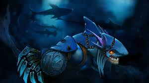
🦈 Лор Slark — Нічний Пролазник із Dota 2 Slark, відомий як Нічний Пролазник, — єдиний в історії втікач із підводної в’язниці Темний Риф (Dark Reef), де утримують найнебезпечніших морських істот, таких як слізереїни, глибокі та меранти. ⚓ Темний Риф: підводна в’язниця Темний Риф — це занурена у темряву в’язниця, де виживають лише найжорстокіші. Slark провів там півжиття, не знаючи ні родини, ні співчуття, покладаючись лише на свою спритність і безжальність. 🐟 Втеча з Темного Рифу Коли група ув’язнених, відома як Дюжина Темного Рифу, планувала втечу, Slark дізнався про їхній задум і приєднався до нього. Під час втечі десятеро загинули, двох спіймали та стратили, але Slark скористався хаосом і зник, ставши єдиним успішним утікачем з Темного Рифу. 🌿 Життя після втечі Після втечі Slark оселився в мангрових заростях на південному узбережжі Тіньового Берега (Shadeshore), де продовжує жити в тіні, залишаючись невловимим. Dota 2 Wiki +2
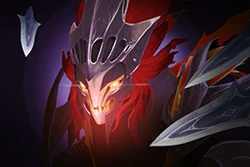
👻 Лор Spectre (Меркуріал) з Dota 2 Меркуріал, відома як Spectre, — це втілення жорстокої та невгамовної енергії, що виникає з тіньового виміру. Вона невідворотно притягується до конфліктів у фізичному світі, де її сутність набуває матеріальної форми. Dota 2 Wiki 🌫️ Походження та природа У своєму істинному вигляді Меркуріал існує поза межами звичних відчуттів, перебуваючи в стані, недоступному для сприйняття звичайними істотами. Однак, коли вона матеріалізується у світі смертних, її свідомість тимчасово розпадається, породжуючи численні тіні — Haunt — які є лише відображеннями її справжньої сутності. У розпалі битви вона поступово відновлює свою свідомість, усвідомлюючи себе як єдину і неповторну Spectre. 🗡️ Здібності та вплив Spectral Dagger: Меркуріал кидає кинджал, залишаючи за собою тіньовий слід, по якому може пересуватись безперешкодно, а вороги, що вступають у контакт із цим слідом, сповільнюються. Desolate: Наносить додатковий чистий урон ворогам, які перебувають на самоті, підкреслюючи її здатність полювати на ізольовані цілі. Dispersion: Частково розсіює отриманий урон, відображаючи його на навколишніх ворогів, що робить її стійкою в бою. Haunt: Створює ілюзії біля кожного ворожого героя на карті, дозволяючи Меркуріал миттєво переміщуватись до будь-якої з них за допомогою Reality, що забезпечує їй глобальну присутність у битвах. Dota 2 Wiki 🌀 Філософія та мета Меркуріал говорить про загадкові сутності, відомі як Transcendencies, і прагне стати однією з Ascendants — вищих істот, що перевершують звичайне розуміння. Вона вважає себе лише однією з багатьох спектрів, але водночас усвідомлює свою унікальність. Її мова іноді незрозуміла навіть їй самій, що свідчить про її існування поза межами звичного сприйняття. Dota 2 Wiki +3 Dota 2 Wiki +3 Dota 2 Wiki +3

🌊 Лор Morphling — Повелитель Вод Dota 2 Morphling — це загадковий елементаль, народжений із космічного льодяного комети, що впала на Землю під час давньої війни. Його історія починається з комети, яка протягом віків мандрувала темрявою космосу, поки не зійшла на Землю, розтанувши в спалахах киплячого тепла. Саме тоді, вивільнившись із льодового полону, Morphling був народжений — елементаль, що володіє силою стихії, такою ж примхливою та нестримною, як сам океан. Яндекс +1 YouTube +1 Dota 2 Wiki ⚔️ Народжений у битві Після свого народження Morphling одразу опинився в центрі битви між двома арміями, що зійшлися на вузькій річці. Інстинктивно він прийняв форму першого генерала, який наважився ступити у воду, і вразив його на смерть. Під час бою Morphling постійно змінював свою форму, миттєво поглинаючи образи різних воїнів — піхотинця, лучника, кавалериста — і до моменту, коли впав останній солдат, він уже зіграв кожну роль. Dota 2 Wiki +4 Dota 2 Wiki +4 Amino Apps +4 🌌 Існування між світами Morphling одночасно існує в Астральному та Земному світах. Він був заманений на Землю обіцянкою корони, створеної з Руди сил Світла. Morphling поклоняється божеству на ім'я Поліморфія і підтримує зв'язок із істотою на ім'я Бірот, яка приносить йому данину в обмін на новини про поверхневий світ. Dota 2 Wiki
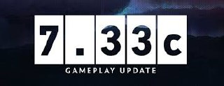
Dota 2 постійно оновлюється — Valve випускає нові патчі, додає героїв, змінює механіки гри, балансує персонажів та вводить нові предмети. Щороку виходять великі оновлення: наприклад, оновлення мапи (New Frontiers), нові аркани, сезонні події та косметичні набори. Слідкуй за останніми новинами, аби бути в курсі змін у грі, а також брати участь у тематичних івентах та батл пасах.
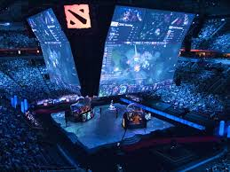
Dota 2 має одну з найпотужніших кіберспортивних сцен у світі. Щорічний турнір The International (TI) збирає найкращі команди з усього світу, борючись за мільйонні призові фонди. Протягом року проходить серія турнірів DPC (Dota Pro Circuit), на яких команди набирають очки для кваліфікації до TI. Найбільші клуби, такі як Team Spirit, Gaimin Gladiators, OG та Team Liquid, регулярно змагаються між собою в епічних баталіях. Вболівай за свої улюблені команди, дивися матчі наживо та аналізуй стратегії профі!